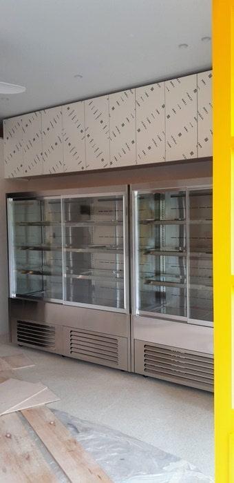
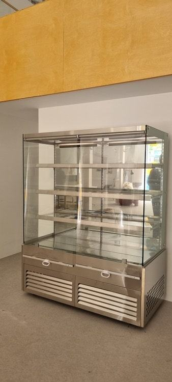

반찬(진열)쇼케이스
반찬가게 전기요금, 반찬쇼케이스에서 새는 전기 잡는 법

반찬가게 전기요금은 하루 종일 돌아가는 반찬쇼케이스와 냉장고가 대부분을 차지하므로, 설정 온도를 필요 이상 낮추지 않고 열 배출이 되는 자리에 두는 것부터 시작하셔야 합니다. 여기에 김서림 방지 장치 단계 조절, 마감 후 덮개 사용, 패킹 점검만 해도 새는 전기를 꽤 막을 수 있습니다.
안녕하세요. 반찬가게와 밀키트 매장의 진열 냉장고를 맞춤 제작하는 한성쇼케이스입니다.
반찬가게를 몇 달 운영해 보신 사장님들이 고지서를 보고 놀라시는 경우가 많습니다. 가스 불을 쓰는 조리보다 전기요금이 더 신경 쓰인다는 말씀도 자주 듣습니다.
반찬쇼케이스, 재료 냉장고, 냉동고가 모두 쉬지 않고 돌아가니 그럴 수밖에 없죠.
그렇다고 장비를 끌 수는 없습니다. 나물과 무침, 젓갈과 조림은 온도가 조금만 흔들려도 맛과 색이 바로 변하니까요.
오늘은 반찬가게 전기요금을 냉장 장비별로 나눠 보고, 영업에 지장 없이 줄일 수 있는 부분을 정리해 드리겠습니다.
1. 반찬쇼케이스가 전기를 많이 쓰는 이유
반찬쇼케이스는 손님 앞에서 하루 종일 문이 열리고 닫히거나, 아예 문 없이 운영되는 경우가 많습니다.
반찬가게는 손님이 용기를 들어 보고 고르는 시간이 길어 냉기가 빠지는 시간도 깁니다.
여기에 조리실 열기가 매장으로 넘어오면 장비가 더 오래 돌아갑니다. 조림이나 볶음을 막 만든 상태로 바로 진열하는 습관도 내부 온도를 끌어올려, 냉각이 다시 내려오는 동안 전기를 더 씁니다.
2. 설정 온도와 진열 습관
가장 흔한 실수는 설정 온도를 가장 낮게 맞춰 두는 것입니다. 너무 차가우면 나물이 마르고 무침 양념이 굳어 보이며, 냉각 시간만 길어집니다.
적정 온도는 반찬 종류와 용기에 따라 다르니 품목별로 맞추시는 게 좋습니다.
만든 반찬은 한 김 식힌 뒤 진열하시고, 용기를 냉기 토출구 앞에 빽빽하게 세워 바람길을 막지 않도록 해 주세요.
단차와 선반을 용기 크기에 맞게 조정해 두면 같은 공간에 더 정돈되게 진열되면서 냉기도 고르게 돕니다.
- 갓 만든 반찬은 식힌 뒤 진열하세요.
- 토출구와 흡입구 앞은 비워 두세요.
- 설정 온도를 품목에 맞게 다시 확인해 보세요.


3. 김서림 방지 장치와 조명
반찬쇼케이스는 국물 있는 반찬이 많아 내부 습기가 많은 편이라 김서림 방지 기능이 있는 유리를 많이 씁니다.
이 장치를 계절과 관계없이 늘 최고 단계로 두면 그만큼 전기를 더 씁니다. 건조한 계절이나 습도가 낮은 시간대에는 단계를 낮춰 보세요.
조명은 LED로 되어 있는지 확인하시고, 영업 전후 진열을 하지 않는 시간에는 꺼 두시는 것도 방법입니다.
주광색, 주백색, 전구색처럼 반찬 색이 잘 보이는 색을 고르면 밝기를 과하게 올리지 않아도 됩니다.
4. 설치 자리와 마감 후 관리
반찬쇼케이스가 조리실 출입구나 화구 쪽에 붙어 있다면 위치부터 다시 보셔야 합니다. 뒷면과 옆면이 벽에 바짝 붙어 있어도 열이 빠지지 못해 냉각이 오래 돌아갑니다.
응축기 먼지는 주기적으로 털어 주세요.
영업이 끝나면 덮개를 덮거나 문을 확실히 닫아 두시고, 문 패킹에 양념이 묻어 굳은 곳이 없는지 확인해 주세요.
패킹 틈 하나로 밤새 냉기가 새면 다음 날 아침 장비가 처음부터 다시 온도를 끌어내려야 합니다. 멀티탭 하나에 여러 장비를 물려 쓰는 것도 피해 주세요.
- 뒷면 열 배출 공간과 응축기 먼지를 확인하세요.
- 마감 후 덮개 사용과 패킹 청소를 습관으로 만드세요.
체크리스트
- 품목별 설정 온도
- 반찬 식힌 뒤 진열하기
- 김서림 방지 장치 단계
- 조명 종류와 사용 시간
- 조리실·화구와의 거리, 뒷면 공간
- 마감 후 덮개와 문 패킹 상태
현장에서 자주 보는 경우: 중고 반찬쇼케이스로 시작하려 할 때
처음 반찬가게를 여시는 사장님들이 중고 반찬쇼케이스를 먼저 알아보시는 경우가 많습니다. 초기 부담이 적어 보이지만, 사후에 문제가 생겼을 때 대처가 어렵고 이전 매장에서의 관리 상태를 알기 어렵다는 점이 걸립니다.
오래 쓴 장비는 패킹과 냉각 부품이 지쳐 있어 전기요금으로 차이가 드러나기도 합니다.
기성 중고는 크기와 디자인이 정해져 있어 매장에 딱 맞게 들어가기도 쉽지 않습니다. 한성쇼케이스는 직영 공장에서 매장 크기와 인테리어에 맞춰 제작하고, 설치 후에도 A/S가 필요할 때 책임지고 관리해 드리고 있습니다.





자주 묻는 질문
반찬쇼케이스를 밤에 꺼 두면 전기요금이 줄지 않나요?
반찬을 모두 다른 냉장고로 옮긴다면 가능하지만, 다음 날 다시 온도를 내리는 데 전기를 쓰고 반찬 이동도 번거롭습니다.
대부분은 덮개를 덮고 계속 가동하는 편이 관리하기 쉽습니다.
오픈형과 도어형 반찬쇼케이스 중 어느 쪽이 전기를 덜 쓰나요?
문이 있는 도어형이 냉기 손실은 적습니다. 다만 손님이 직접 고르는 매장은 오픈형이 판매에 유리할 수 있으니, 매장 운영 방식과 함께 비교해 보세요.
새로 맞출 때 전기요금을 고려해 무엇을 요청하면 좋을까요?
설치 자리 주변 열원과 진열할 반찬 종류를 알려 주세요. 그에 맞춰 냉각 방식과 유리 사양, 조명 구성을 안내해 드리며, 유럽제·삼성 냉각 콤프 중 어떤 것이 들어가는지도 견적서에서 확인하실 수 있습니다.
매장 조건에 맞춰 만드는 한성쇼케이스
원하시는 제품 사진과 설치할 공간 사진만 보내 주셔도 매장에 맞는 구성을 추천해 드립니다.
- 전국 240여 개 A/S 전담 센터 운영
- 본사 대량 자재 매입으로 품질 대비 합리적인 가격
- 유럽제·삼성 냉각 콤프레셔 적용
- 국내 최초 쇼케이스 전문 디자이너 상주
매장 폭과 원하는 진열 구성을 알려 주세요. 실측과 견적을 안내해 드립니다.
031-986-2458